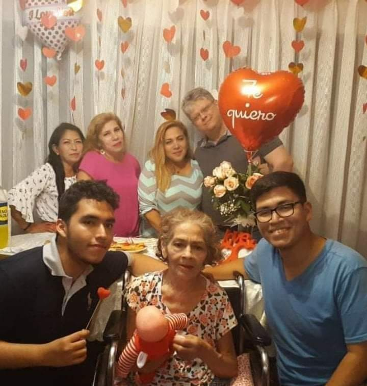
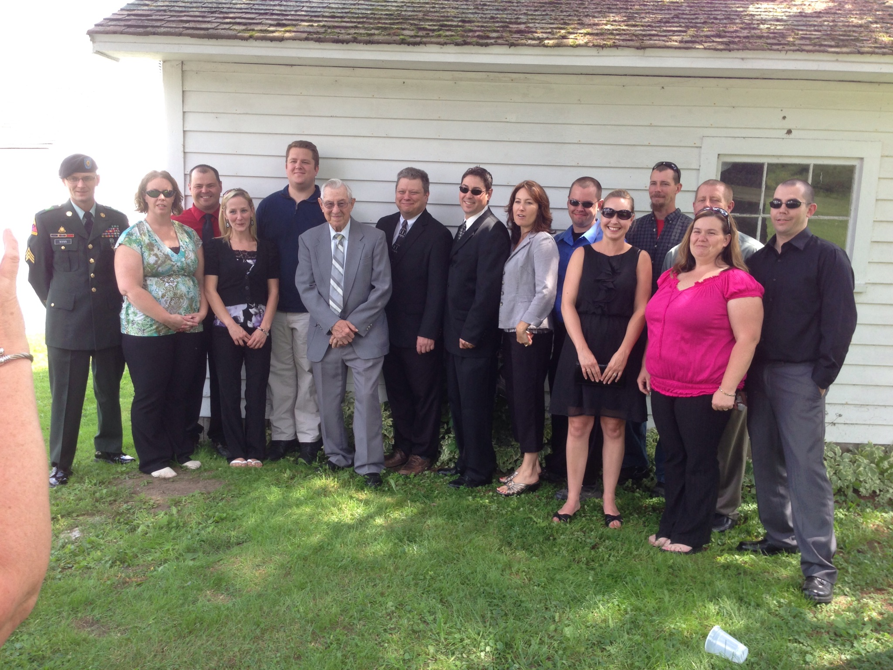

About Me
About MeTracy Robert Mann
I am pursuing my Applied Technology BS at BYU-I for my current career.
My hobbies are exploring programming concepts, learning Latin-American Spanish, sci-fi movies, eating, cooking, studying culture and history.
My wife and I were eternally married or sealed at the Temple in Lima, Peru and we have no children at this time.
I am currently a System Analyst II at Retail Business Services out of Greenville, SC. I currently support the backend systems for a Loyalty Card Management Application for the other divisions of the Ahold/Delhaize Corporation. I have worked for Ahold USA in many forms, positions, and roles over the last 25 years including as an IBM WebSphere® Portal Administrator for the clients intranet. My current education is an Associates in Business Administration and I am looking to expand my capacity for promotions and salary increases by getting my B.S.
The thing I love most about BYU-Idaho is that we can have the opportunity to learn at an institution that respects and honors our faith and beliefs.
I have worked with many web developers at my job, and the mindset is indeed different than the traditional information technology developer. Understanding the root of these differences will allow me to contribute more effectively and in return make for a stronger and more productive team.
I have been a member of the church for 40 years. I am currently serving as the membership clerk in my ward. One of my favorite educational scriptures is Doctrine and Covenants 9:7-8:
7 Behold, you have not understood; you have supposed that I would give it unto you, when you took no thought save it was to ask me.
8 But, behold, I say unto you, that you must study it out in your mind; then you must ask me if it be right, and if it is right I will cause that your bosom shall burn within you; therefore, you shall feel that it is right.
in that there is work to be done on our side in order to gain our answers.
I am also a veteran of the U.S. Army. I served at the close of the Cold War and until the end of Desert Storm. I was a 98C10, Electronic Warfare SIGINT Analyst assigned to the 712 MI BN, 701st MI BG and served at Augsburg, Germany.
|
Sealing to Haydee in Lima, Peru |
Wedding |
Haydee and I at Lincoln Memorial |
|---|---|---|
|

Family in Peru |

Family in New York State |
Thanksgiving in Peru |
|
Basic Training Graduation |
Pathway Connect Graduation |